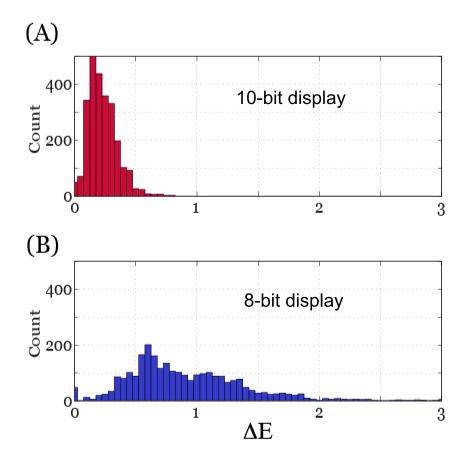
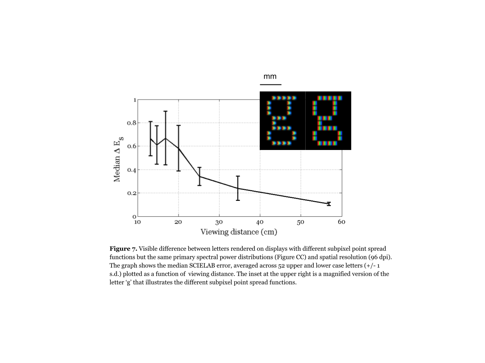

32 Display characterization
Suggestions of all kinds for this book draft are welcome — whether it’s fixing small errors, raising bigger questions, or offering new perspectives. Please share comments through GitHub Issues. To make feedback easier to address, please point to the section you have in mind — by section number or a short snippet of text.
32.1 Display characterization overview
If the standard display model (Section 30.3) describes the device under test, then calibration requires a very small set of display measurements—gamma, spectral power distribution (SPD), subpixel point spread function (PSF), and temporal response—to fully describe the physical radiance of displayed stimuli.
Display characterization and calibration can be conceived as two steps:
- Measuring how well the key model assumptions hold (pixel independence, spectral homogeneity, and spatial homogeneity), and
- Using the calibration measurements together with computational simulations and human visual metrics (Chapter 29) to evaluate display performance for specific applications.
32.2 Testing display model assumptions
32.2.1 Pixel independence
The radiance emitted by a subpixel should depend only on the digital frame buffer value controlling that subpixel. Equivalently, the radiance emitted by a collection of pixels must not change as the digital values of other pixels change. Displays often satisfy this pixel independence principle for a large range of stimuli (Farrell et al, 2008; Cooper et al, 2013), but there are displays and certain types of stimuli that fail this test (Lyons and Farrell, 1989; Elze and Tanner, 2012).
For example, CRTs (Section 31.2.1) must sweep the intensity of the electron beam very rapidly across each row of pixels. There are limits to how rapidly the beam intensity can change (a maximum “slew rate”). If a very different intensity is required for a pair of adjacent row pixels, the beam may not be able to adjust in time and independence is violated, and the standard display model will not be useful for characterizing the spatial-spectral radiance of such stimuli (Lyons and Farrell, 1989; Naiman and Makous, 1992).
LCDs (Section 31.2.2) are limited by the rate at which liquid crystals can change their state in response to a change in voltage polarity, as well as the asymmetry in their response to the “on” or “off” states. LCDs typically combine sample and hold circuitry to switch between different LC states and a flickering backlight to minimize the visibility of motion blur. LCDs with these features (sample and hold circuitry with flickering LED or fluorescent backlights) can be modeled as a linear system (Farrell et al, 2008). Departure from display linearity occurs, however, when LCD manufacturers introduce “overdrive” and “undershoot” circuitry to minimize the visibility of motion blur or when they locally dim LED backlight panels to increase dynamic range. These new features make it very difficult to control and calibrate visual stimuli, particularly for studies that require precise control of timing (Elze and Tanner, 2012).
There are several ways to test pixel independence (Lyons and Farrell, 1989; Pelli, 1997; Farrell et al, 2008), but the general principle is simple. Separately measure the radiance from the middle of a large patch of pixels. Make the measurement with a few different digital values. Then create spatial patterns that are made up with half the pixels at one digital value and half at the other. The radiance from these mixed patches should be the average of the radiance from the large patches, measured individually.
A key assessment is to evaluate how well independence is satisfied for the planned experimental stimuli. For example, CRTs often fail pixel independence for high spatial frequency stimuli because of the finite slew rate of the electron beam. Nonetheless, CRTs are very useful for visual experiments that use low frequency stimuli, such as studies of human color vision. The standard display model, like any useful model, will have some compliance range, and the practical question is whether the model can be used given a specific experimental plan.
OLEDs (Section 31.2.3) are excellent devices for vision research because they can meet the requirements of the standard display model (Cooper et al, 2013). Display electronics control the rate at which the pixel intensities can be changed (the update rate), but OLED pixels can be rapidly turned on and off. Thus while the update rate limits the motion velocities that can be represented, the higher refresh rates minimize the visibility of motion blur and flicker. And, unlike the LCDs that modulate the intensity of a backlight, OLED pixels can be turned off, creating a very dark background.
Given these benefits, and the fact that the cost of manufacturing OLED displays is decreasing, one might consider these displays to be ideal devices for vision research. There is, however, one potentially problematic aspect of OLED development for vision research. OLED display manufacturers are experimenting with different types of color pixel patterns and developing proprietary methods for rendering images on these new displays. Unless it is possible to turn off or at least control the proprietary display rendering, which may vary depending on the presented image, it may be difficult to know the spatial distribution of the spectral energy in displayed stimuli.
Head-mounted displays (Section 31.3) that use graphics engines for display rendering also pose challenges for vision researchers.
32.2.2 Spectral homogeneity
The relative spectral radiance from a subpixel should be the same as its intensity is varied. Any change in the relative spectral radiance will be manifest as an unwanted color shift, and the display will be difficult to calibrate. Recall that the intensity of the light from an LC display depends on the rotation of the polarization angle caused by the birefringent liquid crystal. In some displays, the polarization effect is wavelength dependent and this violates the spectral homogeneity assumption (Wandell and Silverstein, 2003). These failures occur because the LC polarization is not precisely the same for all wavelengths and also as a result of spectral variations in polarizer extinction.
A second deviation from the standard display model occurs when the display emission is angle-dependent. In fact, the first generation of LCDs had a very large angle-dependence so that even small changes in the viewing position had a large impact on the spectral radiance at the cornea. The reason for this strong dependence is that the path followed by a ray through the LC and the polarizers has an influence on the likelihood of transmission, and this function is wavelength dependent (Silverstein and Fiske, 1993). Manufacturers have reduced these viewing angle dependencies by placing retardation films in the optical path (Yakovlev et al, 2015).
For visual psychophysics experiments, it is typical to fix the subject’s head position relative to the screen, typically by using a chin-rest or a bite bar placed on-axis facing the middle of the display. Instruments used for display calibration should be placed at this position. If the spectroradiometer and the eye are located at any other angle, the spectral radiance from the display may be different.
32.2.3 Spatial homogeneity and mura
When a subject is close to the display surface, the angle-dependence of the spectral radiance appears as a spatial inhomogeneity: the spectral radiance at the cornea differs between on-axis (center) and off-axis (edge) pixels. At further distances, say 1 m away, the angle between the center and edge is smaller and the spatial homogeneity is better.
A second source of spatial inhomogeneity arises from the fact that it is difficult to maintain perfect uniformity of the pixels across the relatively large display surfaces. Such non-uniformities are referred to as mura (村), which is a Japanese word for “unevenness” and is the standard industry term used to describe noise-like, spotty, or cloudy variations in brightness or color across a flat panel display. While mura is technically a fixed-pattern noise (it stays in the same place), it often presents as a large, low-frequency, cloudy variation that can look like noise or dirt on a screen that is supposed to be displaying a uniform color.
For LCDs, there are several sources of mura, including non-uniformity in the TFT thickness, LC material density, color filter variations, backlight illumination (Light Source Non-Uniformity, or LSNU), and variations in the optical filters. Additional possible sources are impurities in the LC material, non-uniform gap between substrates, and warped light guides. On LCDs, mura appears as blemishes and dark spots; manufacturers attempt to eliminate these sources during the manufacturing process.
For OLEDs, mura is mainly due to variations in the thickness or efficiency of the organic layers across the panel or non-uniformity in the currents in spatially adjacent diodes, appearing as black lines, blotches, dots, and faint stains that are more visible in the dark areas of an image. This can be mitigated during the manufacturing process by introducing feedback circuitry that adjusts the pixel transistor current during a calibration procedure (McCreary, 2014). Displays are typically tested for mura using a uniformity (“flat field”) test and evaluated using statistical measures or by modeling the Noise Power Spectrum (NPS) together with the human Contrast Sensitivity Function (Chapter 27).
32.3 Display simulations
The standard display model serves as a foundation for display simulation technology, implemented in the open-source ISETBio and ISETCam distributions1. In this section, we present two examples that couple display simulation with the human visual color metrics introduced in Chapter 29. The examples illustrate the use of display simulation to answer questions about the appropriate use of display technology in vision research and engineering.
32.3.1 Color discriminations: the impact of bit-depth
First, we consider how the number of digital steps (frame buffer levels) limits the ability to make threshold color and luminance discrimination measurements. Using the simulator, we calculated the CIE XYZ values for each of 27 different RGB levels, and we then calculated the CIELAB \(\Delta E\) value (Section 29.4) between each of these 27 points and all of its neighbors within 2 digital steps. We repeated this simulation assuming a frame buffer with 10-bits (1024 levels), the actual display resolution, and a coarser step size of 8-bits (256 levels) but equivalent gamma.

The distributions of CIELAB \(\Delta E\) differences for the 10-bit and 8-bit displays are shown in the upper and lower histograms of Figure 32.1, respectively. For a 10-bit display, the signals within two digital steps are below \(\Delta E=1\). In this case, the visual discriminability is small enough to measure a psychophysical discrimination curve. If the display has only 8-bits of intensity resolution, the two digital steps frequently exceed \(\Delta E=1\). This explains why threshold measurements are impractical on 8-bit displays. For commercial purposes, however, one step is about \(\Delta E=1\), which explains why 8-bits renders a reasonable reproduction.
32.3.2 Spatial-spectral discriminations
Next, we analyzed the visual impact of changing the subpixel point spread function (see Figure 30.1). In this example, we compared two displays with the same primaries and spatial resolution (96 dots per inch), but with different pixel point spread functions. In one case, the point spread function is the conventional set of three parallel stripes (Dell LCD Display Model 1905FP), while in the second case the point spread is three adjacent chevrons (Dell LCD Display Model 1907FPc). We used the standard display model to calculate the spatial-spectral radiance of the 52 upper and lower case letters on both displays. The spatial-spectral radiance image data are represented as 3D matrices or hypercubes where each plane in the hypercube contains the stimulus intensity for points sampled across the display \((x,y)\) for each of the sampled wavelengths (\(\lambda\)). To visualize the data, we map the vector describing the spectral radiance for each pixel into CIE XYZ values and convert these into sRGB display values (see inset in Figure 32.2).

We used the spatial-spectral radiance data to calculate the Spatial-CIELAB (S-CIELAB) \(\Delta E\) difference (Section 29.5; Zhang and Wandell, 1997) between each letter simulated on the two displays and viewed from different distances. Figure 32.2 plots the median S-CIELAB \(\Delta E\) value as a function of viewing distance. The analysis predicts no visible differences between pairs of letters rendered on the two displays at any of the viewing distances. And indeed, we did not find significant differences between subjects’ judgments about the quality of letters rendered on the two different displays (Farrell et al, 2008).
32.4 Summary
The standard display model guides both the calibration and simulation of visual stimuli. The model can be used to characterize visual stimuli so that others can replicate vision experiments. It can be used to simulate different types of displays and rendering algorithms and, in this way, makes it possible to evaluate the capabilities of displays during the engineering design process (Farrell et al, 2008). Finally, the standard display model supports the development of computational models for human vision by making it possible to calculate the irradiance incident at the eye (Farrell et al, 2014).
The standard display model assumes that the light generated by each subpixel is additive, independent, and shift-invariant. These assumptions, referred to as spectral homogeneity, pixel independence, and spatial homogeneity, can be tested in the calibration process. A particular display may not meet these conditions for all stimuli, yet the model may still be used to predict the spatial-spectral radiance of a restricted class of visual stimuli. As an example, the standard display model does not predict the spectral radiance of high frequency gratings presented on a CRT (Lyons and Farrell, 1989; Pelli, 1997; Farrell et al, 2008), but the model does predict the spatial-spectral radiance of large uniform colors (Brainard et al, 2002; Post, 1992). The standard display model can predict the steady-state spatial-spectral radiance of high frequency gratings and text rendered on many LCD displays (Farrell et al, 2008), particularly in the absence of complex circuitry to overdrive or undershoot pixel intensity (Lee et al 2001; Lee et al, 2006) and locally dim LED backlights (Seetzen et al, 2004).
Addressing the challenges of emerging far-field and near-field (AR/VR) displays (Section 31.3)—such as the vergence-accommodation conflict and passthrough latency—requires extending display characterization beyond the planar standard display model to comprehensive system simulation that models light-emitting elements, waveguides, optical components, and timing.
https://github.com/isetbio/isetbio: Tools for modeling image systems engineering in the human visual system front end.↩︎